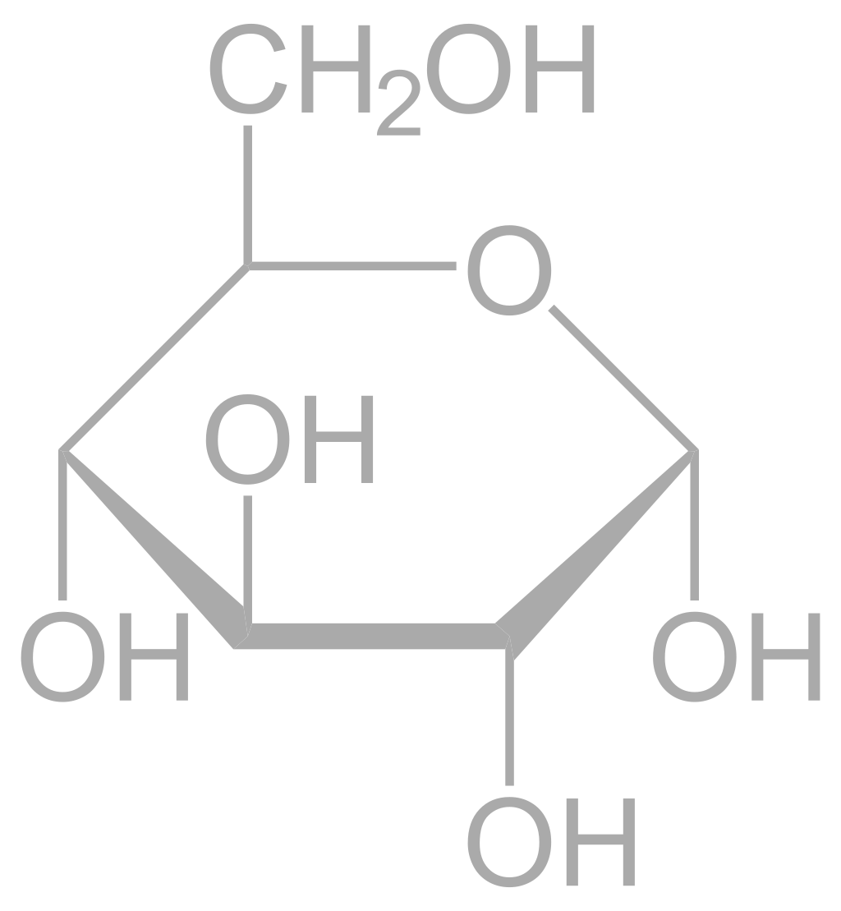

Ionic and Covalent Bonds Lab
Jan MacGregor, 11/10/2020
Materials
- Melting-point apparatus
- Conductivity
- Deionized water
- Griffin beakers
- Test tubes
- Stir bar
- Stir plate
Purpose
The purpose of this lab was to determine the identities of two unknown white, solid, powdered substances, which were acquired in a mixed form, from a not-so-reputable source, who would not reveal the ingredients.
Background information
Covalent and ionic bonds differ in not only their method of bonding atoms, but also the properties that the compounds they create tend to have. Covalent bonds, weaker in strength, share the electrons somewhat equally among all parties involved, in order for each to attain an octet. Ionic bonds, with higher intermolecular strength, involve one atom shedding its valence electrons in order to attain an octet, and another atom taking those valence electrons to do the same. With the new charge imbalance, the two atoms become "stuck" to one another due to electrostatic forces, which prove difficult to break, and cause all of the units of ionic "compound" to be extremely polar, and affect each other strongly due to their high charges.
Procedure
Three tests were done to the substances, a water solubility test, an electrical conductivity test, and a melting point test, with KCl acting as a positive control for the solubility and electrical conductivity.
- When some of the samples were stirred into room-temperature deionized water, both unknowns and the KCl disolved completely, indicating that neither of the solids are non-polar, or metals.
- When testing all of the prepared solutions with the conductivity meter, one of the unknowns, which will be referred to as unknown #1, had no conductivity, while unknown #2 had a moderately high conductivity, and KCl had a very high conductivity.
- When the remainder of the non-dissolved unknown samples were placed into capillary tubes, and those put into the melting-point apparatus, the following melting points were observed.
Data
|
Unknown #1 |
Unknown #2 |
| Melting point |
146°C |
801°C |
| Conductivity |
✗ |
✓ |
| Solubility |
✓ |
✓ |
Melting Points of common substances
|
Aspirin |
Glucose |
Mg(OH)2 |
NaCl |
| Melting points |
136°C |
146°C |
350°C |
801°C |
Conclusion
Given that Unknown #1 shares a melting point with glucose, and that they share the properties of both solubility in water, and inconductivity in dissolved in water, it is a safe conclusion that Unknown #1 is simple grape sugar. Unknown #2 also shares a melting point with another of the substances in the table provided, sodium chloride, or table salt. Unknown #2 shares high solubility and conductivity in water with NaCl, so that is what Unknown #2 is most likely to be.
Structures of relevant compounds
Glucose

Aspirin
Experimental Sources of Error
No error could have been present with the solubility nor the conductivity tests, as those were qualitative, used deionized water, and had a positive control for both, validating our equipment's functionality, but there is always the potential for a sensor error with the melting point apparatus, though there was a control for that too, caffeine, which gave the correct melting point, so it's unlikely that was the case.
Questions
- Which information will help you chemically analyze the 2 mysterious substances? they are solid and white
- Which of the following is insoluble in water? copper wire
- Our control KCl showed high solubility in water. What does KCl actually stand for? potassium chloride
- To which element classes do potassium and chlorine belong to? metals and non-metals (respectively)
- What happens when ionic compounds dissolve in water? cations and anions are released into the solution
- Which of the 3 chemicals are conductive in water? unknown #2 and KCl
- Why can we measure conductivity in our experiment for KCl and substance 2? because charged particles are present in the solution
- What type of compound is substance 2? ionic
- What’s the net charge of an anion? negative
- What’s the charge of the K ion? +1
- How many electrons does a chlorine atom have? 17
- How many valence electrons does an atom try to aquire? 8
- When K+ and Cl- ions form an ionic bond________________________________________. it's held together by electrostatic forces
- How many electrons are shared in a Cl2 molecule? 2
- What do the connecting lines stand for in the Lewis structures? electron pairs
- How many valence electrons does carbon have? 4
- What is the total number of valence electrons in carbon dioxide? 16
- Why does the correct Lewis structure of CO2 involve a double bond between each of the oxygen and carbon atoms? Include the structure! The Lewis structure looks like O=C=O and has double bonds in order to complete the octet for carbon
- How could you change the current state of matter of the samples? by heating it.
- What type of compound do you think caffeine is? Include the structure of caffeine. covalent
- Based on the melting points of both substances, what do you think they are? unknown #1 is glucose, and unknown #2 is salt.
- What rule concerning melting points can you formulate? ionic compounds typically have a higher melting point that covalent compounds
- Why are the melting points of ionic compounds higher than covalent compounds? because ions are tightly packed as a crystal lattice, making their intermolecular forces very strong